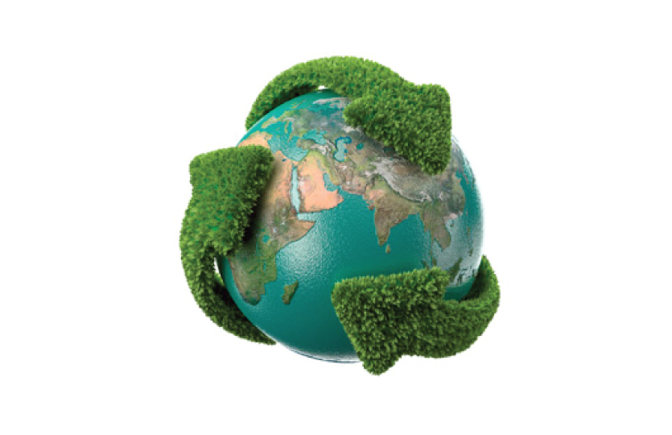

algo para o subtitulo
Desenvolvimento sustentável é um conceito sistêmico que se traduz num modelo de desenvolvimento global que
incorpora os aspectos de um sistema de consumo em massa no qual a preocupação com a natureza, via de extração da
matéria-prima, é máxima. Foi usado pela primeira vez em 1987, no Relatório Brundtland, um relatório elaborado pela
Comissão Mundial sobre Meio Ambiente e Desenvolvimento, criada em 1983 pela Assembleia das Nações Unidas.
A definição mais usada para o desenvolvimento sustentável é:
“ O desenvolvimento que procura satisfazer as necessidades da geração atual, sem comprometer a capacidade das
gerações futuras de satisfazerem as suas próprias necessidades, significa possibilitar que as pessoas, agora e no futuro,
atinjam um nível satisfatório de desenvolvimento social e econômico e de realização humana e cultural, fazendo,
ao mesmo tempo, um uso razoável dos recursos da terra e preservando as espécies e os habitats naturais. ”
Cuidar da segurança de nossas operações e desenvolver ações para manter o equilíbrio entre nossas atividades e o mundo que nos abriga é o nosso conceito de responsabilidade ambiental. Com o aperfeiçoamento de produtos e processos e o investimento em projetos de conservação e preservação de ecossistemas, buscamos sempre crescer contribuindo com o desenvolvimento sustentável. Investimos em pesquisa, para o desenvolvimento de processos e produtos que contribuam para racionalizar o consumo de recursos naturais, buscando diversificar o uso das fontes, entre elas as de energia renovável. Também estimulamos o uso racional de energia e modernizamos nossos processos para aumentar a eficiência energética, reduzindo emissões de gases poluentes.
.
.
.